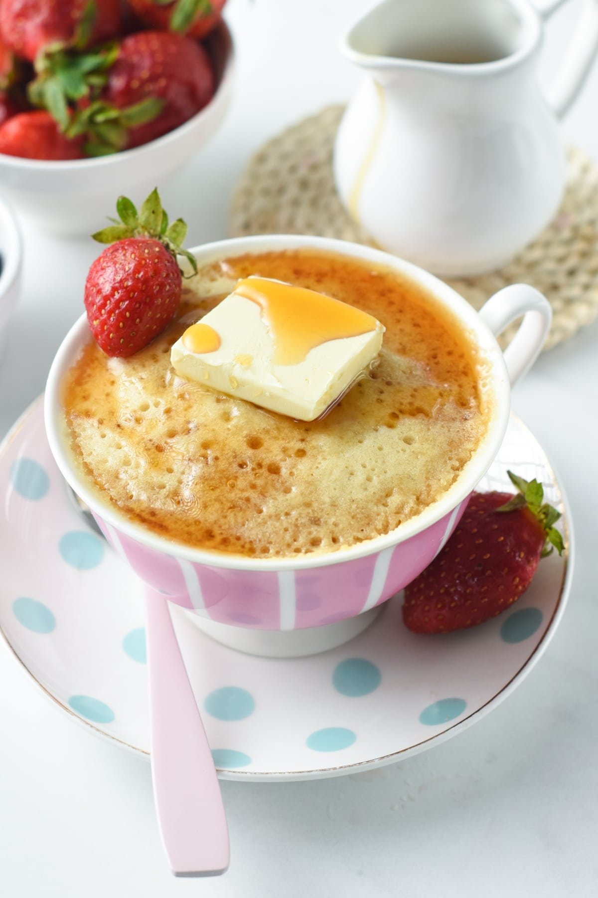

Pancake In A Mug

Description
A pancake in a mug is a quick and easy breakfast recipe that you can make in minutes.
Ingredients
- 30 g All-Purpose Flour
- ½ teaspoon Baking Powder
- 25 g Sugar
- 45 ml Unsweetened Almond Milk
- 15 ml Vegetable Oil (canola or coconut oil)
- 5 ml Vanilla Extract
Steps
- Select a 12-oz mug, a wide mug is better for a pancake shape, and fluffy texture, but tall coffee mugs work as well - the result is more cakey and dense.
- In the microwave-safe mug, whisk the dry ingredients: flour, sugar, baking powder.
- Stir in liquid ingredients: almond milk, oil, and vanilla extract. Combine until light and runny with no lumps.
- Microwave at 900W for 90 seconds in the center of the microwave. If you are not sure what the power of your microwave is, start with 60 seconds and repeat microwaving in 10-second bursts until most and set in the center.
- Cool few seconds, then serve with butter, maple syrup, and berries.
- Microwave pancakes dry fast. Eat it immediately, and don't store cooked pancakes in the microwave for later.